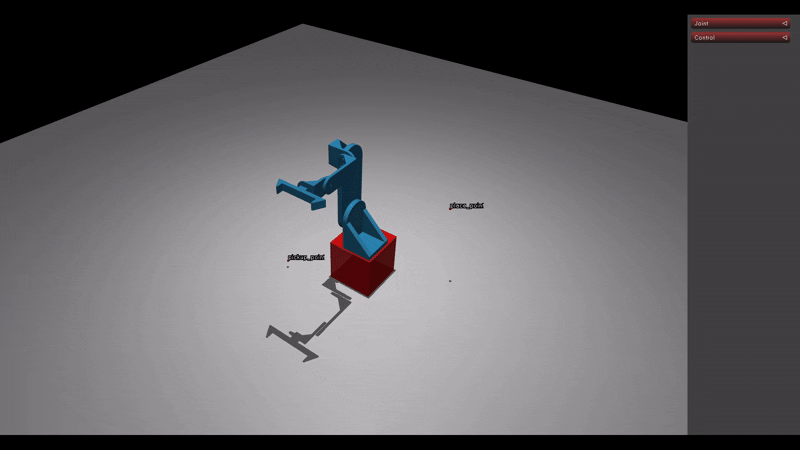

Robotics Project III: DH-Kinematics
In my third robotics project the foreward and inverse position and velocity level kinematics were solved for a 6 degree of freedom robot arm. using analytical and closed form methods. The robot considered is the NexCOM miniBoT which has an articulated first joint and a spherical wrist. Foreward kinematics is simple, after assigning coordinate frames with the Denavit Hartenburg convention a simple matrix equation gives the position level kinematics. Then for velocity a kinematic Jacobian matrix can be created following a given formula and used to compute foreward and inverse velocity level kinematics. The tricky part is the inverse position kinematics. Because the robot has a spherical wrist the calculations for the position and orientation of the end-effector can be decoupled vastly simplifying the problem. The inverse kinematics function created is a fast closed-form function that yields 4 solutions in all positions, however it does not check if it is physically possible for the robot to reach the solutions. Finally, after writing all the code to solve this stuff, I decided to put it to use and created some code which creates a series of interpolated poses along a path and animates this movement using the inverse kinematics. Below you will find the final report which I have summarized here, the project instructions, the robot arm control animation and pictures of the arm model.
Final Report
A detailed report presenting what code was written, how that code approached the problem, what math it implemented, and how the code was put to use.
OpenRobot Arm Control Animation
Here is an animation of the robot arm being moved through a series of interpolated poses.
 Open